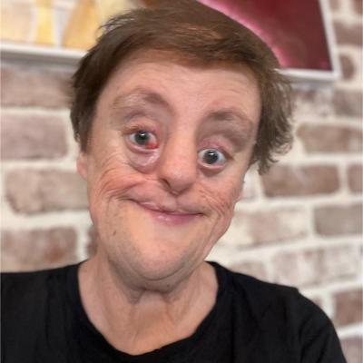

Hi I'm Bel
Here's my About Me from my Activist website "https://coffeewithbelindadownes.com/followedlink/"
Hey! I was trying to write something to introduce myself. Then I remembered that I own a website... So here you are!
I'm Bel. I wear a few hats.
I'm a Linguist, we study Language. If you think of Language as a car and language learners as the drivers, Linguists are the car mechanics. We get under the hood of languages and pull things apart. Here's a Twitter thread I did recently to explain what's actually happening when people 'correct' others' grammar on social media: https://twitter.com/WithDownes/status/1479555832975007747?s=20
I'm a Facial Difference Activist. I was born with a Tessier Cleft https://en.wikipedia.org/wiki/Craniofacial_cleft which I love. You'll notice that I share my photos of myself, some of them deliberately not flattering, a lot on social media. I have a hashtag ReframingFacialDifference on Twitter and Instagram. Fun fact: Facial Difference and Disability are two different things. I happen to have both. And People with Facial Differences can post selfies for personal political reasons. When you follow me for a while you'll probably find that my facial difference becomes less of a focus in the reason why you follow me. That's actually the aim. To STILL see the physical scars on my face, but see that they change in value is a win/win in my book. I also try to do media when I can: https://coffeewithbelindadownes.com/media/
In 2021 I had the privilege of being published in the Growing Up Disabled in Australia anthology, published by Black Inc Books and edited by the amazing Carly Findlay. You can find it here: https://www.blackincbooks.com.au/books/growing-disabled-australia In my chapter 'Having a Voice' I talk about my late mother, Yvonne's gambling addiction and the effect it had on my childhood. So I decided to do something appropriately positive with that negative and so I and others work with the Alliance for Gambling Reform https://www.pokiesplayyou.org.au/ to highlight what's really happening when people gamble and how gambling systems are set up to be addictive (especially poker machines) and will cause you to lose money. If you're affected by issues around gambling please get professional help, you're not alone. https://www.gamblinghelponline.org.au/ There's also https://www.lifeline.org.au/
The 'coffee' thing: I do drink a lot of coffee. And I really appreciate a good cup of well roasted, barista made, unadulterated black coffee. But for me the point is connection. Here in Australia, (I live in a city called Newcastle in NSW), going out for coffee at a café is a popular way of connecting with people. That's also the vibe I bring to my occasional interviews on YouTube.
There's quite a bit more to me, including: I'm passionate about amplifying first person voices - including the Disability hashtag NothingAboutUsWIthoutUs. It's why I retweet a LOT! I'm also interested in the link between climate change and health, but it's not my area, so I'm just trying to learn more as I go. I talk sometimes about the fact that I'm Asexual - something that so many people misunderstand - it isn't the same as non-sexual, which is a problem in talking about the sexual rights of Disabled people. Check out my interview with my friend and Sexologist Jayne McCartney on my YouTube channel: https://www.youtube.com/watch?v=p7kh7OfThoY
Hey, the new news is that I'm starting a coding bootcamp in Feb 2023 because it looks like my amazing job teaching Linguistics is going to go in the next couple of years... I'm really looking forward to it... People think Linguists learn languages, not necessarily! I'm getting a lot of 'learning programming languages... you'll find that easy...' The thing I'm really looking forward to is the problem solving, Linguistics is very analytical at times. At the moment Natural Language Processing looks like a good way to go... I'm looking for a good meaty chatbot program to build
Bel
